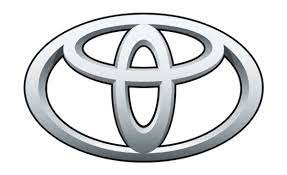
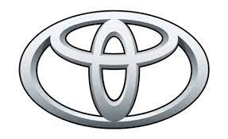

Toyota Motor Corporation (TMC və ya Toyota) — minivanlardan böyük yük maşınılara qədər dəyişən sahələrdə istehsal edən və böyük bir model yelpiyinə sahib olan, dünyanın ən böyük avtomobil şirkətlərindən biridir. Yaxın zamanda Fordu keçərək dünyanın ən böyük ikinci avtomobil firması olan Toyotanın 2007-ci ildə dünya üzərində ən çox avtomobil çıxaran firma olan ancaq böyük bir iqtisadi krizis içindəki General Motorsu taxtından edəcəyi düşünülür. 2007-ci ilin ilk kvartalında dünya satış rəqəmlərinə görə General Motorsu keçmiş və ən çox satılan avtomobil markası olmuşdur. 2003 təqvim ilində Toyota, Lexus, Daihatsu və Hino markalarının illik cəmi satışları 6,78 milyon ədədə çatmışdır. Yaponiyada 12 fabriki, 11 bağlı quruluşu, və 26 ölkədə 46 istehsal təsisi 264.100 işçisi ilə Lexus və Toyota marka vasitələr çıxaran şirkətin məhsulları, 140-dan çox ölkədə müştərilərə çatdırılmaqdadır. Toyotanın avtomobil işlərindəki gəlirləri, cəmi satışlarının 90%-ini əhatə edir. Toyotanın telekommunikasiyadan prefabrik evlərə, və lüks yatlara qədər dəyişik sahələrdə çalışan şirkətləri də vardır. Qlobal Toyota satışları illər içərisində inkişaf göstərməkdədir. 1937-ci ildəki quruluşundan bəri, Toyotanın məhsul yelpiyi, dünyanın ilk ardıcıl çıxarılan hibrit vasitəsi "Prius"u və bazara hazır ilk hidrogenli vasitəsi "Toyota FCHV"i əhatə edəcək qədər genişlənmişdir. Toyotanın 1951-ci ildən bəri aralıqsız çıxardığı "Toyota Land Cruiser" modeli yalnız yüksək satış rəqəmlərinə çatmaqla qalmamış, keyfiyyəti sayəsində sinifində bir əfsanə halına gəlmişdir. Toyota istehsal sistemi (TPS), bütün müştərilərin ehtiyacına uyğun vasitələrin elastik bir şəkildə və yüksək keyfiyyətdə çıxarıla bilməsinə imkan verir. Toyota konserni idarəetməsi smartfondan həyata keçirilən Connected Services-in yeni xidmətinin işə başladığını elan edib.[5]


 
